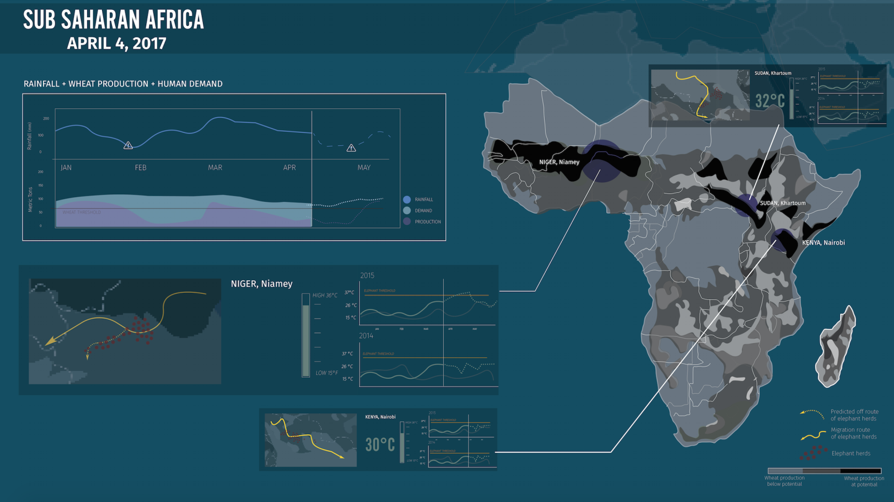

project
data visualization
objective:
create a single screen dashboard
duration:
4 weeks


The goal of this project was to create a single screen dashboard that displays the climate change and biodiversity information for Sub-Saharan Africa. We had two distinctive different groups to design for.

Client:
Scientist
Our client for this project was an advisory board of climate change and biodiversity scientists who wanted to see the fruits of their research and monitoring efforts acted upon. They wanted to urge the policy makers to do something about climate changes.

User:
Policymaker
Our users were national-level policy makers who were swamped with a lot of information and distractions, They did not have a lot of time to dedicate time to focus on the dashboard. The secondary and tertiary audiences included NGOs, non-profits, and the public.
RESEARCH
We first did a lot of research on the current climate and biodiversity issues for Sub-Saharan Africa. We used all of our findings to scope our focus to prioritize the most critical threats and we narrowed our key indiciators that we will use for our dashboard.
Sub-Saharan Africa is a diverse places with a wide range of habitats and ecosystems. However, a number of species’ population was dependent on rainfall, temperature, and degree of topographical and habitat variation.
Our Initial Indicators:
1. Temperature Change
2. Agriculture Growth
3. Rainfall
4. Population Growth
5. Biodiversity Measure
6. Keystone Species
7. Habitat Loss / Deforestation
8. Poaching Rates
FINAL DESIGN
After going through a couple of iterations, we decided to further narrow down the scope of the dashboard. We wanted to only show the most important part of the dashboard to the users. We made the center of the dashboard revolve around the population of the elephants since elephants were really sensitive to climate change. After researching about Sub-Saharan Africa's economy, we found out that agriculture made up about 42% of the Sub-Saharan Africa’s income. Therefore, the policy makers would want to focus on those areas with high profit yields that would help increase GDP. Secondly, the region’s human inhabitants suffered severely from hunger. As such, better crop production was also crucial because of its potential to help reduce these problematic hunger rates. Although agricultural development iwa widespread in the region, crop production was still not meeting demand. Therefore, these policymakers would mainly be care about the increasing crop production,and ways they could better utilize the current agricultural land.
